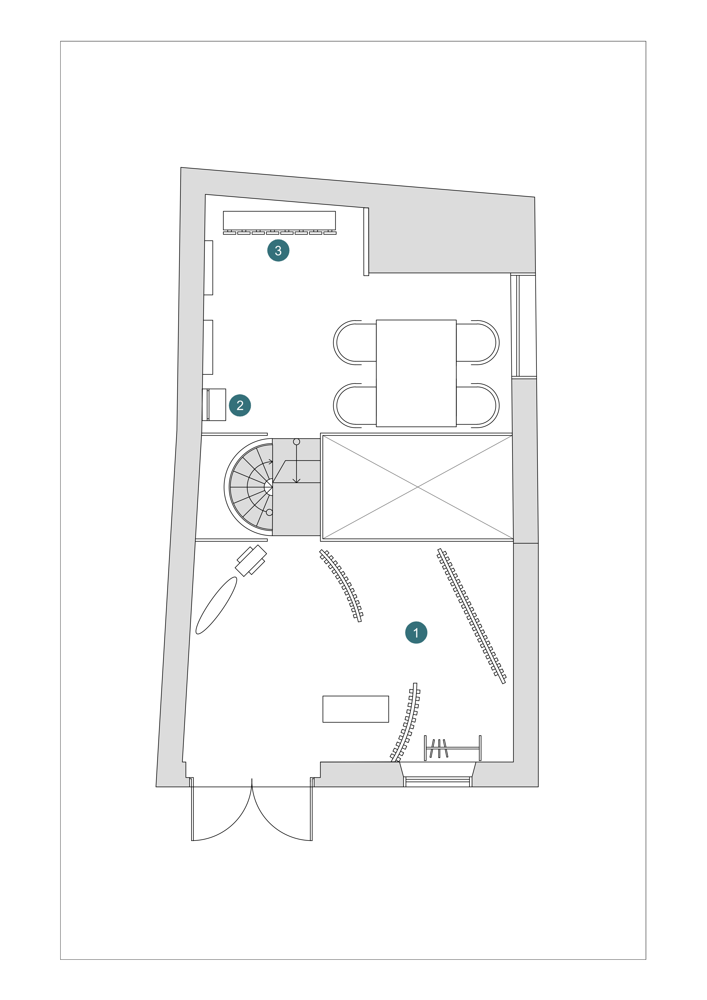
GROUND FLOOR
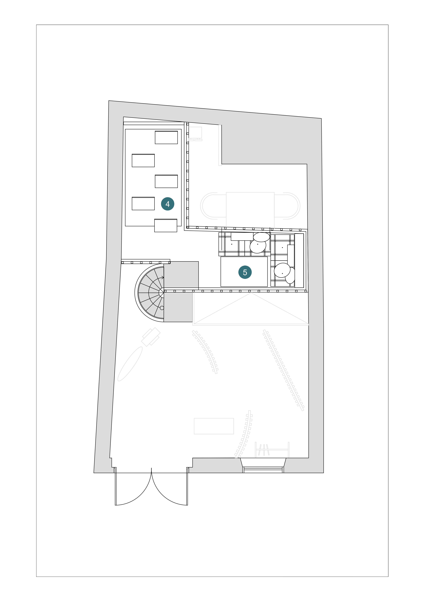
MEZZANINE


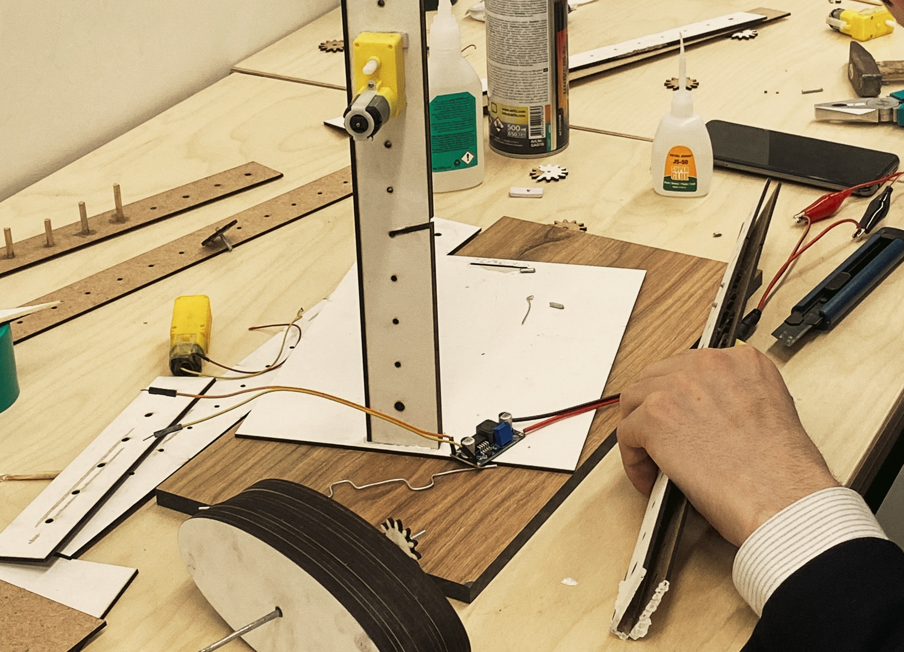
Process of Prototyping and Testing
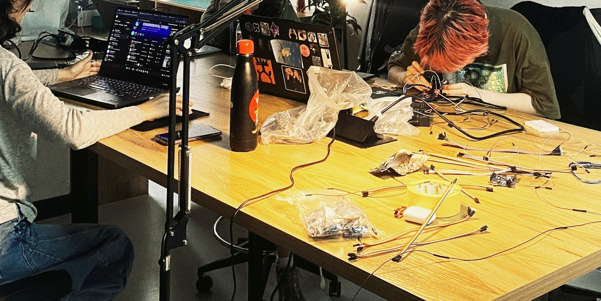


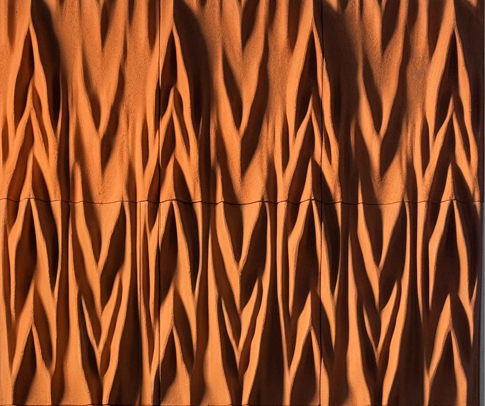
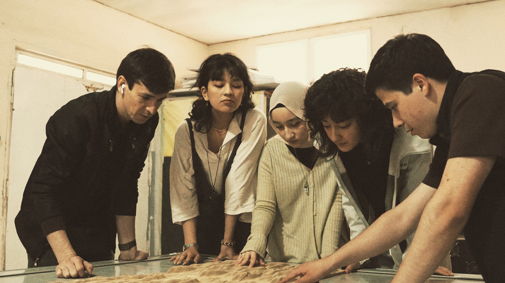
 alt="Plan 01">
alt="Plan 01">
The ground floor is organized around a clear circulation strategy. From the entrance, visitors are visually connected to the main lobby, exhibition spaces, staircase, and private garden, allowing immediate orientation within the building. Public programs—including the exhibition hall, workshops, conference hall, and retail area—are arranged around this central sequence, while administrative functions remain more private. The double-height Net Space (Crazy Activity) becomes the project's primary experiential element, connecting the first and second floors through a suspended mesh structure filled with natural light.


Visual Archive
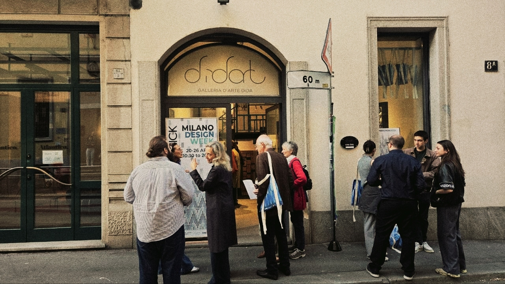
Gallery Entrance

First Floor View

View from Mezzanine

First Floor View

Entrance View

Final Work

Final Work
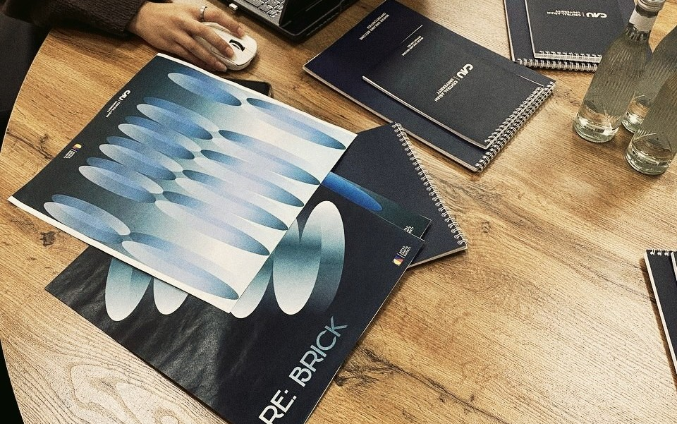
Final Work
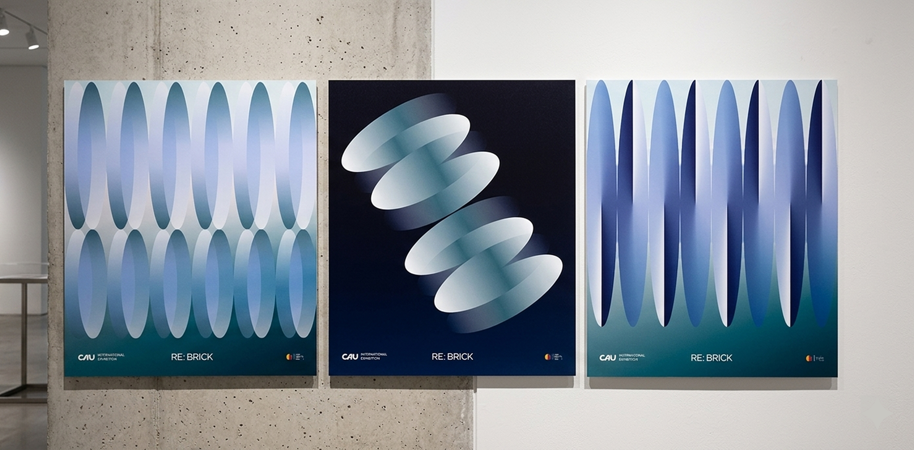
Final Work
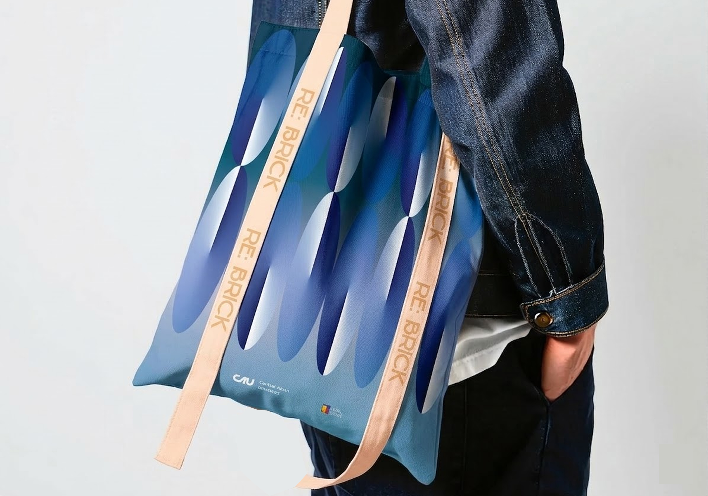
Final Work
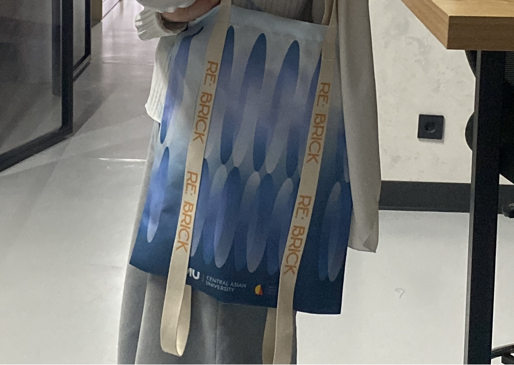
Final Work
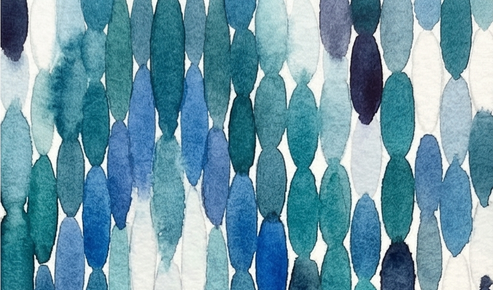
alt="Project Sketch">